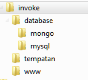

Tempatan
Local Development Enviroment
with Vagrant and Ansbile (and some Shell)
Shih Oon Liong
What is it?
-
A local development enviroment that consist of
- Multiple VMs in VirtualBox
- Vagrant File with user specific configs
- Production-ready Ansible Playbook and Roles
Tempatan
tempatan is a Malaysian/Malay word meaning 'local'/'home grown'
Did you prefer the original
Invoke Local Development Vagrant Ansible Deployment Enviroment (ILDVAE)
Objectives
Allow a developer to launch a local development enviroment that mirrors how the production equivalent works as close as possible
Criterias
Points that this enviroment has to meet
works across all major OS
- including OS X, Windows and Linux-based OS
- this include making sure provisioning can be run on all OS
- Ansible is not supported out of the box in Windows at this time - and so vagrant-ansible cannot be run
- the vagrant configuration only runs shell provisioning to be x-platform compatible.
Multi VM
replicates a multi-server enviroment where components such as web and database are on separate servers
-
Contains
- Web Server (Apache, PHP, Node)
- Database Servers (MySQL, Mongo)
- Gateway
Gateway
replicates a gateway/jumpbox/bastion type server
all access and updates to the servers are to be done from one server
emulates production servers should only have limited accessibility
Configurable
- User-specific Config Folder
- VAGRANT_USER=me vagrant up
Minimize Deployment kerfuffles
Developers can code with better confidence that local code should work on production servers


Workflow
Folder Structure
Work Folder

Tempatan
.
|-- apache
|-- bootstrap
|-- deployment
|-- etc
|-- README.md
`-- Vagrantfile
Tempatan - etc
etc/
|-- configs
| |-- sshd_config
| |-- sudoers
| `-- tmp
`-- users
|-- labs
`-- sliong
Tempatan - User Config
etc/users/sliong/
|-- bootstrap_local.sh
|-- ansible.yml
|-- vagrant.yml
|-- keys
| `-- public
`-- servers
|-- dbmongo_hosts
|-- dbmysql_hosts
|-- gateway_ansible_hosts
|-- gateway_hosts
`-- web_hosts
Tempatan - Ansible
deployment/ansible/
|-- architecture
| `-- invoke
|-- roles
| |-- apache
| |-- mongo
| |-- mysql
| |-- nodejs
| |-- php5
| `-- sysadmin
`-- source
Usage
- Labs RnD
- Pendo (partially) - forked
- Memelabs (partially) - forked
To be improved
- Move roles into submodule - to be merged with Ed's
- Move "apache" and "bootstrap" folder into deployment
- Break up single config file into multiple
- Allow default user and architecture env vars to be overwritten by a file
- Further reduce shell provisioning scripts (users, authorized_keys)
- VPC setup
- PHP5 fpm pool per site
- Memcache
- Grunt Watch
- New Ansible Roles (Munin, Rsyslog, Redis, Varnish)
Thanks!
Ed, Wes, Vivian